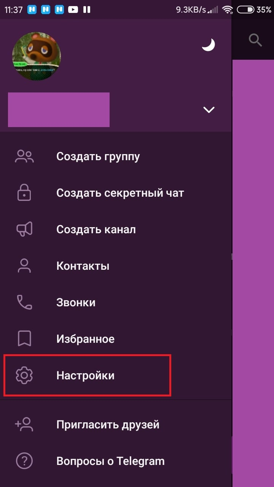

Как удалить аккаунт в Телеграм
Возможно вам мог надоесть мессенджер Телеграм, и вы бы хотели из него навсегда уйти, удалив свой аккаунт. В этой статье будет рассказано о том, как навсегда удалить аккаунт и как включить автоматическое удаление через настройки.
| Через сайт вручную ↓ | Автоматическое удаление ↓ | |
| Удаление в Версия для пк ↓ | Мобильная версия ↓ | |
Через сайт вручную
Для полного удаления аккаунта, привязанного к мобильному номеру телефона, у разработчиков Телеграм есть собственный сайт, попасть на который можно по этой ссылке. После перехода на сайт, совершите следующие действия:
Внимание! После проделанных действий вы не сможете восстановить сообщения, файлы и другую информацию. У вас все еще останется возможность создания аккаунта через номер телефона. После удаления аккаунта вы не сможете создать новый следующую неделю.
- Откроется страница удаления аккаунта. Введите свой номер телефона в поле;
- Нажмите «Next»;

- После нажатия на кнопку «Next» в Телеграме появится сообщение с кодом, который нужно скопировать;
- Вновь открываем сайт и видим новое поле для ввода кода, вводим скопированных код туда;
- Нажимаем на кнопку «Sign in»;
- Откроется новое окно, в нем для помощи в разработке Телеграма вы можете написать причину удаления аккаунта. Это необязательно;
- Для подтверждения удаления нажимаем на кнопку «Delete my account»;
- Вновь вылезает новое окно подтверждения. Для удаления аккаунта, нажмите на «Yes, delete my account». Для отмены удаления аккаунта, нажмите «Nope, I’ll give it another try»;
- После подтверждения своих действий вылезет это сообщение. Теперь ваш аккаунт полностью удален с возможностью регистрации нового.
{kind=link}
{kind=link}
{kind=link}
{kind=link}
{kind=link}
Дополнительная функция Телеграма – автоматическое удаление
В телеграме есть функция автоматического удаления аккаунта после 1, 3, 6 или 12 месяцев отсутствия. По истечению срока с вашим аккаунтом произойдет то же, что и при ручном удалении: он навсегда исчезнет, как и все сообщения и файлы, но возможность регистрации нового аккаунта будет. Для включения или продления автоматического удаления, совершите следующие действия:
Десктопное приложение
- Откройте дополнительное меню, нажав на кнопку в левом верхнем углу;
- Открылось дополнительное меню. В нем найдите и откройте пункт «Настройки»;
- В настройках найдите и откройте пункт «Конфиденциальность»;
- Откроются настройки конфиденциальности. Прокрутите окно до раздела «Удаление аккаунта»;
- Нажмите на пункт «При неактивности…»;
- Откроется окно «Автоудаление аккаунта». Выберите, через сколько времени будет удален аккаунт, и нажмите «Сохранить».
{kind=link}
{kind=link}
{kind=link}
{kind=link}
Мобильное приложение
- Откройте дополнительное меню свайпом вправо или кнопкой в левом верхнем углу;
- В дополнительном меню найдите и откройте пункт «Настройки»;
- Найдите и откройте настройки конфиденциальности;
- Откроются настройки конфиденциальности. Прокрутите окно до пункта «Автоудаление аккаунта»;
- Откройте настройки автоудаления аккаунта;
- Выберите срок, по истечению которого ваш аккаунт автоматически удалится. Закройте окно.
{kind=link}
{kind=link}
{kind=link}